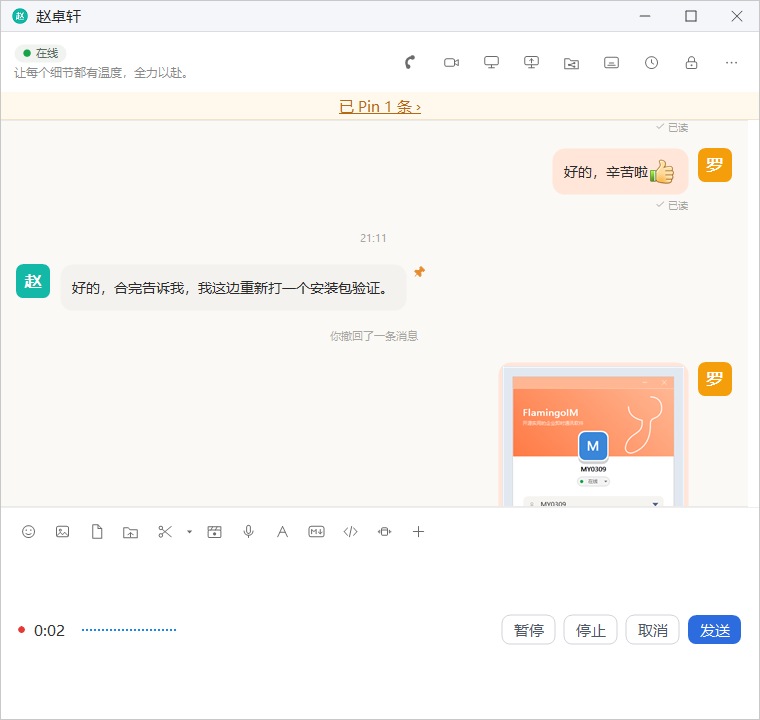
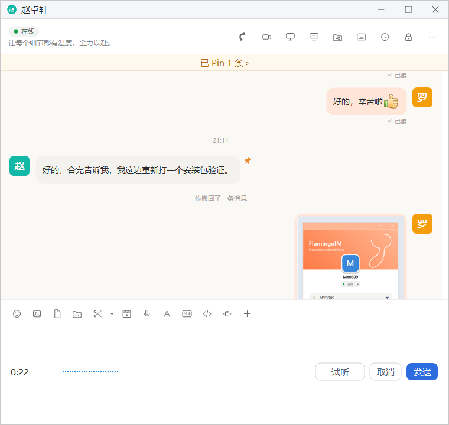
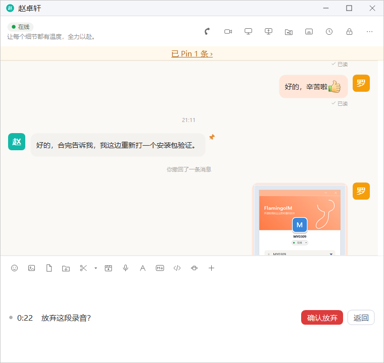

语音消息
不方便打字时，可以录一段语音发给同事。本章介绍怎样录制、暂停、试听和发送语音消息，以及怎样收听别人发来的语音。
- 适用：全体员工
- 单聊、群聊通用
- 需要：电脑接有麦克风
- 每条最长 2 分钟
录制语音
点聊天窗口输入工具栏的麦克风按钮 语音消息，立即开始录音。输入框的位置换成录音条：左边是红点和录音时长，中间是随音量跳动的波形，右边是操作按钮。

| 按钮 | 作用 |
|---|---|
| 暂停 / 继续 | 暂时停止录音，红点变灰、计时停住，按钮变成「继续」；点「继续」接着录。暂停期间也可以点「试听」听一下已经录好的部分 |
| 停止 | 结束录音，进入试听状态，之后不能再接着录 |
| 取消 | 放弃这段录音，见下文「放弃录音」 |
| 发送 | 把录好的语音发给对方 |
录音条显示时，按 Enter 等于点 发送，按 Esc 等于点 取消。
停止与试听
点 停止 后，录音条显示这段语音的总时长，按钮变为 试听、取消 和 发送。点 试听 从头播放刚录的内容，播放时按钮变为 停止试听。确认无误后点 发送。

录满 2 分钟会自动停止一条语音最长 2 分钟。录满时会自动停止并进入试听状态，等你确认后再发送，不会自动发出。
放弃录音
点 取消（或按 Esc）时，录音条会询问「放弃这段录音？」：点 确认放弃 删除这段录音并收起录音条；点 返回 回到刚才的状态，原来在录音的会接着录。录音不到 1 秒时点 取消 会直接放弃，不再询问。

收听语音
发出和收到的语音在聊天里显示为语音气泡，里面有播放图标、波形和时长，时长越长气泡越宽。
- 点一下语音气泡开始播放，再点一下停止。同一时间只播放一条，开始播放另一条时，正在播放的会先停下。
- 对方发来、你还没有听过的语音，气泡旁边带一个红点，听过之后红点消失。红点只记录在本机。
- 一条听完后，如果紧挨着的下一条也是对方发来的未听语音，会接着自动播放；中间隔着别的消息时就停下。
- 消息记录窗口和合并转发的聊天记录里的语音也可以点击播放。
注意事项
- 录音不到 1 秒就点 停止 或 发送，会提示「说话时间太短」并收起录音条，不会发出。
- 正在进行语音、视频通话时不能录制语音消息，会提示「通话中不能录制语音消息」；播放语音不受影响。
- 同一时间只能在一个聊天窗口里录音，另一个窗口正在录音时会提示「正在另一个会话里录音」。
- 麦克风无法打开时会提示检查麦克风是否连接，以及 Windows 设置里是否允许应用使用麦克风。
- 看不到麦克风按钮时，说明客户端的音视频组件没有加载，语音消息暂时不能使用。